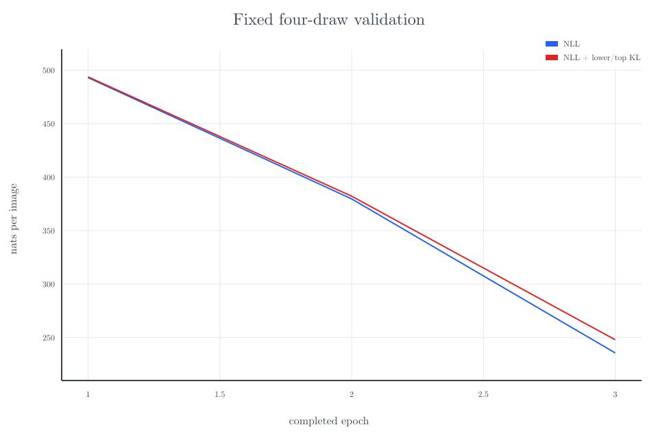
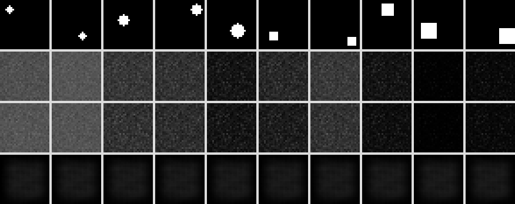
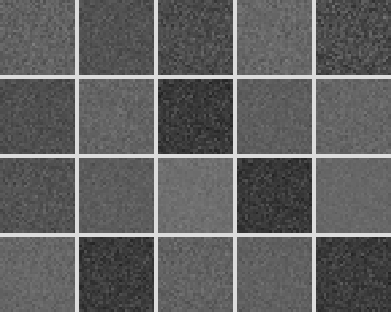

Ladder VAE: Precision Fusion and a Conditional Lower Prior
Abstract
A Ladder VAE combines bottom-up Gaussian evidence with a top-down learned prior by adding precisions. This report derives that fusion with a hand-checkable example and fits a compact two-level model on 294 binary known-factor images. It preserves 22 tensors/52,196 parameters, 21 explicit Adam updates, fresh per-epoch Gaussian banks and four-draw validation selection. Epoch3 is selected. Test negative ELBO is 246.529827 nats/image, comprising NLL234.154285, lower KL7.508567 and top KL4.866975. Recursive greedy-mean MSE0.073146 is worse than the fitting mean0.048548. Noise interventions and unfiltered reconstructions/ancestral probabilities retain the short run's limitations. The model demonstrates precision-fusion inference, not the paper's full batch-normalized, warmup training recipe or useful semantic disentanglement.
Bottom-up evidence corrected by a sampled top-down prior
[Sonderby et al.'s Ladder Variational Autoencoders](https://arxiv.org/abs/1602.02282) combine data-dependent Gaussian evidence with the generative hierarchy. Here image x produces h1=ReLU(784→32), then h2=ReLU(32→16). Separate linear heads on h1 predict four-coordinate lower Gaussian evidence, while heads on h2 predict a two-coordinate top posterior. Explicit top noise samples z2; a 2→16 ReLU conditional network predicts p(z1|z2). Precision fusion combines that prior with evidence to form q(z1|x,z2), then lower noise samples z1.
The generative model factorizes p(z2)p(z1|z2)p(x|z1). *Only z1 enters the decoder* 4→32 ReLU→784 logits. Top samples affect reconstruction through their learned lower prior and the fused lower posterior, with no direct top-code or image-feature bypass. This differs from the spatial hierarchy report, whose decoder explicitly uses both latent groups.
#include <dm/dm.hpp>
int main() {
std::filesystem::create_directories("build");
dm::graphics::Diagram d(52, 1450);
dm::graphics::DiagramNodeStyle wide;
wide.width = 4.6;
wide.height = 2.6;
dm::graphics::DiagramStroke arrow;
arrow.arrow = true;
d.node("x", {0, 0}, "Image x\n784 pixels", wide)
.node("h1", {6, 0}, "Bottom feature h1\n32 ReLU", wide)
.node("h2", {12, 0}, "Top feature h2\n16 ReLU", wide)
.node("ev", {6, -4}, "Lower Gaussian evidence\nFour means / log variances", wide)
.node("q2", {18, 0}, "Top posterior q(z2|x)\nTwo coordinates", wide)
.node("z2", {18, -4}, "Sample top z2\nExplicit top epsilon", wide)
.node("prior", {18, -8}, "Learned lower prior\np(z1|z2)", wide)
.node("fuse", {12, -8}, "Add evidence/prior precisions\nq(z1|x,z2)", wide)
.node("z1", {12, -12}, "Sample lower z1\nExplicit lower epsilon", wide)
.node("dec", {24, -12}, "LOWER code only\nReLU / Bernoulli decoder", wide)
.edge("x", "h1")
.edge("h1", "h2")
.edge("h1", "ev")
.edge("h2", "q2")
.edge("q2", "z2")
.edge("z2", "prior")
.edge("ev", "fuse")
.edge("prior", "fuse")
.edge("fuse", "z1")
.edge("z1", "dec")
.save_svg("build/ladder_method.svg");
}
Precision fusion by hand
For evidence N(u,exp(v)) and prior N(p,exp(r)), precisions add coordinatewise:
Evidence mean2/variance4 and prior mean−1/variance9 give posterior mean14/13 and variance36/13. Two identical Gaussians halve variance; fusion is not averaging log variances or adding residual heads. The implementation shifts log precisions by their detached maximum before exponentiating, retaining all four continuous input paths. It preserves the source operation order and Float32 rounding; no variance clipping is applied. Very large log-scale cancellation is not repaired.
#include <dm/dm.hpp>
int main() {
namespace n = dm::nn;
namespace m = n::models;
const auto t = n::DType::Float64;
auto q = m::LadderPrecisionFusion(
n::full({1, 1}, 2, t),
n::full({1, 1}, std::log(4.), t),
n::full({1, 1}, -1, t),
n::full({1, 1}, std::log(9.), t));
if (std::abs(q.mu.item() - 14. / 13) > 1e-14 ||
std::abs(std::exp(q.log_variance.item()) - 36. / 13) > 1e-14)
return 1;
std::print(
"Evidence(2,4) + prior(-1,9): fused mean {:.12f}, variance {:.12f}.\n",
q.mu.item(),
std::exp(q.log_variance.item()));
std::vector<double> logvar, mean, variance;
for (int i = 0; i <= 40; ++i) {
double v = -2 + i * .15;
auto out = m::LadderPrecisionFusion(
n::full({1, 1}, 2, t),
n::full({1, 1}, v, t),
n::full({1, 1}, -1, t),
n::full({1, 1}, std::log(9.), t));
logvar.push_back(v);
mean.push_back(out.mu.item());
variance.push_back(std::exp(out.log_variance.item()));
}
auto chart = dm::graphics::RPlot::create();
chart.lines(logvar, mean, "fused mean", dm::RGBA{37, 99, 235}, 2)
.lines(logvar, variance, "fused variance", dm::RGBA{220, 38, 38}, 2)
.title("Precision fusion / fixed prior mean-1, variance9")
.x_label("evidence log variance / nats")
.y_label("fused mean or variance")
.save_svg("build/ladder_fusion.svg");
}Evidence(2,4) + prior(-1,9): fused mean 1.076923076923, variance 2.769230769231.

For each supplied top draw, the lower KL is the conditional diagonal-Gaussian expression, while top KL is to standard normal. The training loss is
The lower KL changes with sampled z2 because its prior and fused posterior both change. Fixed multi-draw evaluation averages *all three* terms, not NLL alone. Epsilon has six columns: four lower draws first, two top draws last. Zero epsilon recursively takes top means then conditional fused lower means; this is not the marginal posterior predictive mean. There is no BN, warmup, free bits, annealing or clipping in this compact adaptation.
Native data preparation and complete explicit fitting
Native offline beta-vae-assets preparation exhausts 2 shapes×3 sizes×7 x×7 y=294 unique binary 28×28 images. Radius=size+2, centre=(3x+5,3y+5); circles/squares use inclusive Euclidean/Chebyshev radii. Residue(x+2y+size+3shape) mod7 assigns test0, validation1, fit2–6, giving 210/42/42 disjoint combinations. These are tiny structured teaching data, not an IID image benchmark. Factor indices are saved for provenance but never enter the network or epoch selection.
#include <dm/dm.hpp>
int main() {
namespace n = dm::nn;
std::filesystem::create_directories("build/ladder_vae");
const std::filesystem::path cache = dm::datasets::data_home();
dm::datasets::prepare_example_data("beta-vae-assets", cache.string());
auto arrays = n::load_npz((cache / "beta_vae/factors.npz").string());
std::set<int> ids;
std::set<std::vector<int>> images;
for (auto& [name, value] : arrays) {
if (name.ends_with("_images")) {
for (int b = 0; b < value.size(0); ++b) {
auto row = n::select(value, 0, b).to_vector<int>();
if (!images.insert(row).second)
return 1;
}
value = n::cast(value, n::DType::Float32);
}
if (name.ends_with("_source_ids"))
for (int id : value.to_vector<int>())
if (!ids.insert(id).second)
return 1;
}
if (ids.size() != 294 || images.size() != 294)
return 1;
n::save_npz("build/ladder_vae/data.npz", arrays);
std::filesystem::copy_file(
cache / "beta_vae/manifest.json",
"build/ladder_vae/data_manifest.json",
std::filesystem::copy_options::overwrite_existing);
std::print(
"| split | images | features |\n|---|---:|---:|\n| fit |210|784|\n| validation |42|784|\n| "
"test |42|784|\n");
}| split | images | features |
|---|---|---|
| fit | 210 | 784 |
| validation | 42 | 784 |
| test | 42 | 784 |
Seed2503 initializes the 22 trainable leaves. BatchOrder(210,32,2507) gives seven updates per epoch, including the final 18-image batch, for 21 Adam steps. Learning rate0.003, moments0.9/0.999 and epsilon1e-8 match the source. Fresh training noise banks use seeds2552/2553/2554; fixed four- draw fit/validation/test banks use2521/2531/2539, with ancestral seed2543. Explicit local MT19937/Box–Muller Float64 draws and Float32 casts are both saved.
Completed epochs1–3 are eligible. The minimum fixed four-draw validation negative ELBO selects the checkpoint; test pixels never select it. Evaluation accumulates each Float32 per-case term in Float64, draw then row, preserving the exact source criterion. Fresh model-only restore reproduces that score; optimizer-resume state is not saved. The actual gradient and Adam step remain visible in the full editable program below.
#include <dm/dm.hpp>
namespace nn = dm::nn;
void Require(bool condition, const std::string& why) {
if (!condition)
throw std::runtime_error(why);
}
void Near(double x, double y, double tolerance, const std::string& why) {
Require(std::abs(x - y) <= tolerance, why);
}
struct BetaFactorData {
nn::Tensor images, factors, source;
};
struct VaeNoiseBank {
nn::Tensor standard, epsilon;
};
nn::Tensor Flatten(const nn::Tensor& t) {
return nn::reshape(t, {t.size(0), 784});
}
nn::Tensor Find(const nn::NamedTensors& a, const std::string& key) {
for (const auto& [k, v] : a)
if (k == key)
return v;
throw std::runtime_error(key);
}
std::vector<float> Bytes(const nn::Tensor& t) {
return t.contiguous().to_vector<float>();
}
nn::NamedTensors Arrays(const nn::ParameterStore& p) {
nn::NamedTensors a;
for (const auto& k : p.names())
a.emplace_back(k, p.at(k).detach().clone());
return a;
}
auto Snapshot(const nn::ParameterStore& p) {
return p.flatten();
}
nn::NamedTensors CheckGradients(
const nn::ParameterStore& p,
const std::vector<nn::Tensor>& gs,
const std::string&,
const std::string&) {
nn::NamedTensors a;
Require(gs.size() == p.size(), "all22 gradients");
const auto names = p.names();
for (std::size_t i = 0; i < gs.size(); ++i) {
double norm = 0;
for (double x : gs[i].to_vector<double>()) {
Require(std::isfinite(x), "finite derivatives");
norm += x * x;
}
Require(norm > 0, "nonzero derivative in each tensor");
a.emplace_back(names[i], gs[i]);
}
return a;
}
VaeNoiseBank LadderNoise(std::int64_t n, std::int64_t samples, std::uint32_t seed) {
auto standard = nn::models::GaussianNoise({n, 6}, samples, seed);
return {standard, nn::cast(standard, nn::DType::Float32)};
}
nn::Tensor LadderNoiseAt(const VaeNoiseBank& bank, std::int64_t k) {
return nn::select(bank.epsilon, 0, k).contiguous();
}
nn::NamedTensors
Evaluate(nn::ParameterStore& p, const nn::Tensor& images, const nn::Tensor& noise) {
nn::NoGradGuard guard;
auto o = nn::models::LadderVariationalAutoencoder(p, Flatten(images), noise);
nn::NamedTensors out{
{"evidence_mu", o.evidence_mu},
{"evidence_lv", o.evidence_lv},
{"top_mu", o.top_mu},
{"top_lv", o.top_lv},
{"top_z", o.top_z},
{"prior_mu", o.prior_mu},
{"prior_lv", o.prior_lv},
{"lower_mu", o.lower_mu},
{"lower_lv", o.lower_lv},
{"lower_z", o.lower_z},
{"probability", o.probability},
{"nll", o.nll},
{"kl_lower", o.kl_lower},
{"kl_top", o.kl_top},
{"loss", o.loss}};
for (auto& [name, t] : out) {
t = t.contiguous();
for (float v : t.to_vector<float>())
Require(std::isfinite(v), "all fifteen original Ladder fields finite");
}
return out;
}
nn::Tensor Decode(nn::ParameterStore& p, const nn::Tensor& code) {
nn::NoGradGuard guard;
return nn::sigmoid(nn::models::GaussianVaeDecode(p, code)).contiguous();
}
nn::NamedTensors Prior(nn::ParameterStore& p, const nn::Tensor& top, const nn::Tensor& noise) {
nn::NoGradGuard guard;
auto o = nn::models::LadderPrior(p, top, noise);
return {
{"top_z", o.top_z},
{"lower_noise", o.lower_noise},
{"prior_mu", o.prior_mu.contiguous()},
{"prior_lv", o.prior_lv.contiguous()},
{"lower_z", o.lower_z.contiguous()},
{"probability", o.probability.contiguous()}};
}
bool SameBytes(const nn::Tensor& a, const nn::Tensor& b) {
return a.dtype() == b.dtype() && a.shape() == b.shape() && Bytes(a) == Bytes(b);
}
double MaxAbsDiff(const nn::Tensor& a, const nn::Tensor& b, int count) {
auto x = Bytes(a), y = Bytes(b);
double result = 0;
for (int i = 0; i < count; ++i)
result = std::max(result, std::abs(double(x[i]) - y[i]));
return result;
}
nn::Tensor PixelMean(const nn::Tensor& image) {
return nn::cast(nn::mean(nn::cast(Flatten(image), nn::DType::Float64), {0}), nn::DType::Float32);
}
nn::Tensor Constant(const nn::Tensor& row, int n) {
return nn::broadcast_to(row.reshape({1, 784}), {n, 784}).contiguous();
}
double Mse(const nn::Tensor& a, const nn::Tensor& b) {
return nn::mean(
nn::square(
nn::cast(Flatten(a), nn::DType::Float64) -
nn::cast(Flatten(b), nn::DType::Float64)))
.item();
}
std::vector<BetaFactorData> LoadData(const std::filesystem::path& path) {
auto a = nn::load_npz(path.string());
std::vector<BetaFactorData> out;
for (const std::string split : {"fit", "validation", "test"})
out.push_back(
{Find(a, split + "_images"), Find(a, split + "_factors"), Find(a, split + "_source_ids")});
return out;
}
std::vector<double>
LadderScore(nn::ParameterStore& model, const nn::Tensor& images, const VaeNoiseBank& noise) {
double nll = 0, lower = 0, top = 0;
const std::int64_t n = images.size(0), samples = noise.epsilon.size(0);
for (std::int64_t k = 0; k < samples; ++k) {
auto f = Evaluate(model, images, LadderNoiseAt(noise, k));
const auto a = Find(f, "nll").to_vector<float>(), b = Find(f, "kl_lower").to_vector<float>(),
c = Find(f, "kl_top").to_vector<float>();
for (std::int64_t i = 0; i < n; ++i) {
nll += a[i];
lower += b[i];
top += c[i];
}
}
const double count = double(n * samples);
return {nll / count, lower / count, top / count, (nll + lower + top) / count};
}
void Checks(const std::filesystem::path& root) {
const std::vector<float> u{2, -1, .3f, .8f}, v{float(std::log(4)), 0, -.2f, .4f},
p{-1, 1, .1f, -.4f}, r{float(std::log(9)), float(std::log(4)), .6f, -.3f};
auto U = nn::from_vector(u, {2, 2}).requires_grad_(),
V = nn::from_vector(v, {2, 2}).requires_grad_(),
P = nn::from_vector(p, {2, 2}).requires_grad_(),
R = nn::from_vector(r, {2, 2}).requires_grad_();
auto q = nn::models::LadderPrecisionFusion(U, V, P, R);
auto kl = nn::models::ConditionalGaussianKl(q.mu, q.log_variance, P, R);
auto objective =
nn::sum(nn::square(q.mu) + nn::square(q.log_variance), {0, 1}) + nn::sum(kl, {0});
auto g = nn::grad(objective, {U, V, P, R});
nn::Tensor extreme_mu, extreme_lv, zero;
{
nn::NoGradGuard guard;
auto extreme = nn::models::LadderPrecisionFusion(
U,
nn::from_vector(std::vector<float>{-80, 80, 80, -80}, {2, 2}),
P,
nn::from_vector(std::vector<float>{80, -80, -80, 80}, {2, 2}));
extreme_mu = extreme.mu.contiguous();
extreme_lv = extreme.log_variance.contiguous();
zero = nn::models::ConditionalGaussianKl(U, V, U, V).contiguous();
}
std::vector<nn::Tensor> out{
q.mu.detach().contiguous(),
q.log_variance.detach().contiguous(),
kl.detach().contiguous(),
g[0],
g[1],
g[2],
g[3],
extreme_mu,
extreme_lv,
zero};
for (const auto& t : out)
for (float x : t.contiguous().to_vector<float>())
Require(std::isfinite(x), "finite fusion and all gradients");
for (const auto& t : {g[0], g[1], g[2], g[3]}) {
double norm = 0;
for (float x : t.contiguous().to_vector<float>())
norm += double(x) * x;
Require(norm > 0, "fusion derivatives include evidence AND prior mean/logvariance");
}
const auto mu = out[0].to_vector<float>(), lv = out[1].to_vector<float>(),
z = out[9].to_vector<float>();
for (int i = 0; i < 4; ++i) {
const double a = std::exp(-double(v[i])), b = std::exp(-double(r[i]));
Near(mu[i], (a * u[i] + b * p[i]) / (a + b), 3e-7, "known precision weighted mean");
Near(lv[i], -std::log(a + b), 3e-7, "known harmonic posterior variance");
}
for (int b = 0; b < 2; ++b)
Near(z[b], 0, 0, "conditional KL(q||q) exactly zero");
nn::save_npz(
(root / "fusion_algebra.npz").string(),
{{"evidence_mu", U.detach()},
{"evidence_lv", V.detach()},
{"prior_mu", P.detach()},
{"prior_lv", R.detach()},
{"mu", out[0]},
{"lv", out[1]},
{"kl", out[2]},
{"du", out[3]},
{"dv", out[4]},
{"dp", out[5]},
{"dr", out[6]},
{"extreme_mu", out[7]},
{"extreme_lv", out[8]}});
std::cout << "precision fusion/evidence+prior gradients/conditional KL zero/extreme stable "
"precisions passed"
<< std::endl;
}
nn::Tensor Columns(const nn::Tensor& x, std::int64_t begin, std::int64_t end) {
return nn::slice_axis(x, 1, begin, end).contiguous();
}
void Run(
const std::filesystem::path& data,
const std::filesystem::path& root,
int epochs,
const std::string& init) {
auto pools = LoadData(data);
std::filesystem::create_directories(root);
Checks(root);
std::vector<VaeNoiseBank> noise{
LadderNoise(210, 4, 2521), LadderNoise(42, 4, 2531), LadderNoise(42, 4, 2539)},
training;
auto prior_noise = LadderNoise(20, 1, 2543);
nn::NamedTensors fixed{
{"prior_standard", prior_noise.standard}, {"prior_epsilon", prior_noise.epsilon}};
for (int split = 0; split < 3; ++split) {
const std::string name = split == 0 ? "fit" : split == 1 ? "validation" : "test";
fixed.emplace_back(name + "_standard", noise[split].standard);
fixed.emplace_back(name + "_epsilon", noise[split].epsilon);
}
nn::save_npz((root / "fixed_noise.npz").string(), fixed);
for (int e = 1; e <= epochs; ++e) {
training.push_back(LadderNoise(210, 1, 2551 + e));
nn::save_npz(
(root / ("train_noise_epoch" + std::to_string(e) + ".npz")).string(),
{{"standard", training.back().standard}, {"epsilon", training.back().epsilon}});
}
nn::ParameterStore model(2503);
{
nn::NoGradGuard guard;
nn::models::LadderVariationalAutoencoder(model, nn::zeros({1, 784}), nn::zeros({1, 6}));
}
nn::OptimizerConfig config;
config.kind = nn::OptimizerKind::Adam;
nn::Optimizer optimizer(model, .003, config);
if (!init.empty())
model.load(init);
Require(model.size() == 22 && model.count() == 52196, "two-level ladder parameter census");
nn::save_npz((root / "initial_arrays.npz").string(), Arrays(model));
nn::BatchOrder order(210, 32, 2507);
std::ofstream history(root / "history.tsv"), batches(root / "batches.tsv");
history.precision(17);
history << "epoch\ttrain_preupdate_negative_elbo\tvalidation_nll\tvalidation_lower_"
"kl\tvalidation_top_kl\t"
"validation_negative_elbo\n";
batches << "epoch\tstep\trow\tsource_id\n";
const auto fit_source = pools[0].source.to_vector<int>();
const auto best_path = (root / "best.npz").string();
double best = std::numeric_limits<double>::infinity();
int selected = 0, step = 0;
const auto started = std::chrono::steady_clock::now();
for (int epoch = 1; epoch <= epochs; ++epoch) {
order.begin_epoch();
double sum = 0;
int seen = 0;
auto epsilon = LadderNoiseAt(training[epoch - 1], 0);
for (;;) {
auto rows = order.next();
if (rows.empty())
break;
auto x = nn::take_rows(pools[0].images, rows), e = nn::take_rows(epsilon, rows);
if (step == 0) {
nn::save_npz((root / "first_batch.npz").string(), {{"images", x}, {"epsilon", e}});
auto g = CheckGradients(
model,
nn::grad(
nn::models::LadderVariationalAutoencoder(model, Flatten(x), e).loss,
model.parameters()),
"all ladder gradients finite",
"all22tensors receive gradients");
nn::save_npz((root / "first_gradients.npz").string(), g);
nn::save_npz((root / "first_forward.npz").string(), Evaluate(model, x, e));
}
auto train = nn::models::LadderVariationalAutoencoder(model, Flatten(x), e);
sum += double(rows.size()) * train.loss.item<float>();
optimizer.step(nn::grad(train.loss, model.parameters()));
seen += int(rows.size());
for (auto row : rows)
batches << epoch << '\t' << step << '\t' << row << '\t' << fit_source[row] << '\n';
if (step == 0)
nn::save_npz((root / "first_update_arrays.npz").string(), Arrays(model));
++step;
}
Require(seen == 210, "all210fitting cases once per epoch");
auto score = LadderScore(model, pools[1].images, noise[1]);
history << epoch << '\t' << sum / seen;
for (auto value : score)
history << '\t' << value;
history << '\n';
nn::save_npz(
(root / ("epoch" + std::to_string(epoch) + "_arrays.npz")).string(), Arrays(model));
if (score[3] < best) {
best = score[3];
selected = epoch;
model.save(best_path); // four-sample validation ELBO selects checkpoint
}
}
const double seconds =
std::chrono::duration<double>(std::chrono::steady_clock::now() - started).count();
nn::ParameterStore deployed(2503);
{
nn::NoGradGuard guard;
nn::models::LadderVariationalAutoencoder(deployed, nn::zeros({1, 784}), nn::zeros({1, 6}));
}
deployed.load(best_path); // fresh ladder model-only restore
Near(
LadderScore(deployed, pools[1].images, noise[1])[3],
best,
1e-8,
"fresh selected validation score");
const auto before = Snapshot(deployed);
nn::NamedTensors output;
for (int split = 0; split < 3; ++split) {
const std::int64_t n = pools[split].images.size(0);
const std::string name = split == 0 ? "fit" : split == 1 ? "validation" : "test";
auto greedy = Evaluate(deployed, pools[split].images, nn::zeros({n, 6}));
Require(
SameBytes(Find(greedy, "lower_z"), Find(greedy, "lower_mu")) &&
SameBytes(Find(greedy, "top_z"), Find(greedy, "top_mu")),
"both zero-noise samples equal their recursive means");
for (const auto& [key, value] : greedy)
output.emplace_back(name + "_greedy_" + key, value);
for (int k = 0; k < 4; ++k) {
auto f = Evaluate(deployed, pools[split].images, LadderNoiseAt(noise[split], k));
for (const auto& [key, value] : f)
output.emplace_back(name + "_draw" + std::to_string(k) + "_" + key, value);
}
}
auto test = Evaluate(deployed, pools[2].images, LadderNoiseAt(noise[2], 0)),
repeat = Evaluate(deployed, pools[2].images, LadderNoiseAt(noise[2], 0));
Require(
SameBytes(Find(test, "probability"), Find(repeat, "probability")) &&
SameBytes(Find(test, "probability"), Decode(deployed, Find(test, "lower_z"))),
"repeat and target-free lower latent decode BITEXACT");
auto single = Evaluate(
deployed,
nn::take_rows(pools[2].images, {0}),
nn::take_rows(LadderNoiseAt(noise[2], 0), {0}));
const double parity = MaxAbsDiff(Find(single, "probability"), Find(test, "probability"), 784);
Require(parity < 2e-6, "single/batch parity");
std::vector<float> lower(42 * 6, 0.f), upper(42 * 6, 0.f);
for (int b = 0; b < 42; ++b) {
for (int j = 0; j < 4; ++j)
lower[b * 6 + j] = .5f;
for (int j = 4; j < 6; ++j)
upper[b * 6 + j] = .5f;
}
auto base = Evaluate(deployed, pools[2].images, nn::zeros({42, 6})),
low = Evaluate(deployed, pools[2].images, nn::from_vector(lower, {42, 6})),
top = Evaluate(deployed, pools[2].images, nn::from_vector(upper, {42, 6}));
Require(
SameBytes(Find(base, "lower_mu"), Find(low, "lower_mu")) &&
SameBytes(Find(base, "prior_mu"), Find(low, "prior_mu")) &&
MaxAbsDiff(Find(base, "lower_z"), Find(low, "lower_z"), 42 * 4) > 1e-4,
"lower noise changes sample only,not hierarchy heads");
const double prior_effect = MaxAbsDiff(Find(base, "prior_mu"), Find(top, "prior_mu"), 42 * 4),
fusion_effect = MaxAbsDiff(Find(base, "lower_mu"), Find(top, "lower_mu"), 42 * 4);
Require(
prior_effect > 1e-5 && fusion_effect > 1e-5,
"top noise changes conditional prior AND fused lower posterior");
nn::save_npz((root / "top_noise_intervention.npz").string(), top);
nn::save_npz((root / "lower_noise_intervention.npz").string(), low);
auto prior_bank = LadderNoiseAt(prior_noise, 0);
auto prior = Prior(deployed, Columns(prior_bank, 4, 6), Columns(prior_bank, 0, 4));
Require(
SameBytes(Find(prior, "probability"), Decode(deployed, Find(prior, "lower_z"))),
"ancestral hierarchical sample decodes exactly");
nn::save_npz((root / "prior.npz").string(), prior);
Require(before == Snapshot(deployed), "all inference/prior/intervention calls immutable");
nn::save_npz((root / "outputs.npz").string(), output);
nn::save_npz((root / "model_arrays.npz").string(), Arrays(deployed));
auto score = LadderScore(deployed, pools[2].images, noise[2]);
const double mse = Mse(Find(output, "test_greedy_probability"), pools[2].images);
auto mean = Constant(PixelMean(pools[0].images), 42);
const double mean_mse = Mse(mean, pools[2].images);
std::ofstream meta(root / "metrics.json");
meta.precision(17);
meta << "{\"parameters\":52196,\"tensors\":22,\"epochs\":" << epochs << ",\"updates\":" << step
<< ",\"selected_epoch\":" << selected << ",\"mc_samples\":4,\"test_nll\":" << score[0]
<< ",\"test_lower_kl\":" << score[1] << ",\"test_top_kl\":" << score[2]
<< ",\"test_negative_elbo\":" << score[3] << ",\"greedy_decode_test_mse\":" << mse
<< ",\"fit_mean_test_mse\":" << mean_mse << ",\"single_batch_max_error\":" << parity
<< ",\"top_noise_prior_mu_max_effect\":" << prior_effect
<< ",\"top_noise_fused_mu_max_effect\":" << fusion_effect
<< ",\"training_seconds\":" << seconds << "}\n";
Require(bool(meta) && bool(history) && bool(batches), "complete Ladder evidence");
std::print(
"| selected epoch | test NLL | lower KL | top KL | negative ELBO | greedy MSE | fit-mean MSE "
"|\n|---|---:|---:|---:|---:|---:|---:|\n| {} | {:.9f} | {:.9f} | {:.9f} | {:.9f} | {:.9f} | "
"{:.9f} |\n",
selected,
score[0],
score[1],
score[2],
score[3],
mse,
mean_mse);
std::print(
"Top-noise prior-mean effect {:.9f}; fused-mean effect {:.9f}.\n",
prior_effect,
fusion_effect);
}
int main() {
Run("build/ladder_vae/data.npz", "build/ladder_vae", 3, "");
}precision fusion/evidence+prior gradients/conditional KL zero/extreme stable precisions passed
| selected epoch | test NLL | lower KL | top KL | negative ELBO | greedy MSE | fit-mean MSE |
|---|---|---|---|---|---|---|
| 3 | 234.154285068 | 7.508566750 | 4.866975254 | 246.529827071 | 0.073145999 | 0.048548290 |
Top-noise prior-mean effect 0.469194412; fused-mean effect 0.593488216.
Validation selection and honest controls
The fixed validation criterion decreases over the three completed epochs, selecting epoch3. The test score decomposes into NLL234.154285, lower KL7.508567 and top KL4.866975, totaling 246.529827. Greedy MSE0.073146 is worse than fitting mean0.048548. The run does not establish useful reconstruction, a semantic hierarchy or disentanglement. Top-noise intervention changes prior means by0.469194 and fused means by0.593488; that demonstrates dependence, not meaning. Lower noise leaves those heads fixed and changes only lower samples/decoding.
#include <dm/dm.hpp>
int main() {
std::ifstream f("build/ladder_vae/history.tsv");
std::string line;
std::getline(f, line);
std::vector<double> epoch, nll, lower, top, total;
while (std::getline(f, line)) {
std::istringstream row(line);
double e, train, a, b, c, d;
row >> e >> train >> a >> b >> c >> d;
if (!row)
return 1;
epoch.push_back(e);
nll.push_back(a);
lower.push_back(b);
top.push_back(c);
total.push_back(d);
}
auto chart = dm::graphics::RPlot::create();
chart.lines(epoch, nll, "NLL", dm::RGBA{37, 99, 235}, 2)
.lines(epoch, total, "NLL + lower/top KL", dm::RGBA{220, 38, 38}, 2)
.title("Fixed four-draw validation")
.x_label("completed epoch")
.y_label("nats per image")
.save_svg("build/ladder_validation.svg");
}
Unfiltered reconstruction and ancestral sampling
Ten evenly spaced test indices floor(k×41/9) are shown without filtering. Rows contain the original, recursive zero-noise reconstruction, one posterior-draw probability image and the fitting-only mean. The common grayscale range is[0,1]. The prior gallery uses all twenty prescribed independent top/lower draws: sample z2~N(0,I), then z1~p(z1|z2), then decode z1. There is no image or encoder input to this ancestral path. Both galleries show probabilities, not Bernoulli pixel samples; recursive means are not marginal predictive means.
#include <dm/dm.hpp>
int main() {
namespace n = dm::nn;
auto find = [](const n::NamedTensors& a, const std::string& key) {
for (const auto& [k, t] : a)
if (k == key)
return t;
throw std::runtime_error(key);
};
auto data = n::load_npz("build/ladder_vae/data.npz"),
out = n::load_npz("build/ladder_vae/outputs.npz");
std::vector<std::int64_t> rows;
for (int i = 0; i < 10; ++i)
rows.push_back(i * 41 / 9);
auto mean = n::mean(find(data, "fit_images").reshape({210, 784}), {0}, true);
std::vector<n::Tensor> panels;
for (const auto& x : std::vector<n::Tensor>{
find(data, "test_images"),
find(out, "test_greedy_probability"),
find(out, "test_draw0_probability"),
n::broadcast_to(mean, {42, 784})})
panels.push_back(n::take_rows(x, rows).reshape({10, 28, 28, 1}));
n::save_image_grid(
n::concat(panels, 0), "build/ladder_reconstructions.png", 10, 0, 1, 4, 220. / 255, 3);
}
#include <dm/dm.hpp>
int main() {
namespace n = dm::nn;
auto a = n::load_npz("build/ladder_vae/prior.npz");
for (const auto& [key, t] : a)
if (key == "probability")
n::save_image_grid(
t.reshape({20, 28, 28, 1}), "build/ladder_priors.png", 5, 0, 1, 4, 220. / 255, 3);
}
Reproduction evidence and binding boundary
All20 source NPZ archives are compared by dtype, shape and every value byte: fusion algebra, initial/first-update/every-epoch/selected weights, all first derivatives, noise banks, fifteen original forward fields for each greedy/four-draw pool evaluation, both noise interventions and all six ancestral endpoints. Full histories and batch/source orders match exactly. The optional NumPy oracle independently checks all first parameter derivatives, exact first Adam update, all four fusion partials, Gaussian banks, every saved hierarchy/decoder endpoint and every eligible four-draw validation criterion. It does not fit or prepare/download data.
python3 scripts/check_ladder_variational_autoencoder.py docs/mepml/nn/2_autoencoders/2.2_variational_autoencoders/build/ladder_vae --json build/nn-report-conversion/ladder_vae/oracle.jsonNative functions are LadderPrecisionFusion, LadderPrior and LadderVariationalAutoencoder, reusing ConditionalGaussianKl and GaussianVaeDecode. The full native result additionally owns logits, for sixteen fields; the source archive protocol preserves its original fifteen. Python/R expose the same operations. Tests retain fusion/ancestral/full fields through parent collection, verify Float64 input/noise/prior paths and make caller-owned Adam explicit. This API/report conversion does not mark unfinished independent Python/R experiment loops as ports.